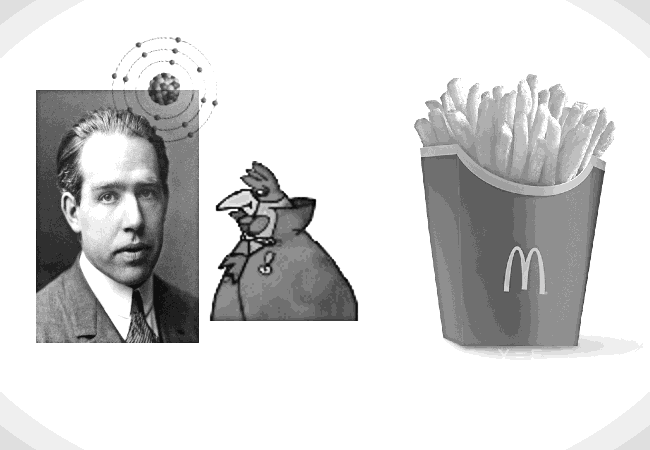

Brawo! Teraz tylko pozostaje pytanie, czy zajrzeliście tu zgodnie z przepowiednią, czy zgodnie z repozytorium na githubie?
Zagadka jest prosta. Zwierzątka występują w liczbie mnogiej.
Wracaj lepiej do komiksu.
>Wróć do czytania
_